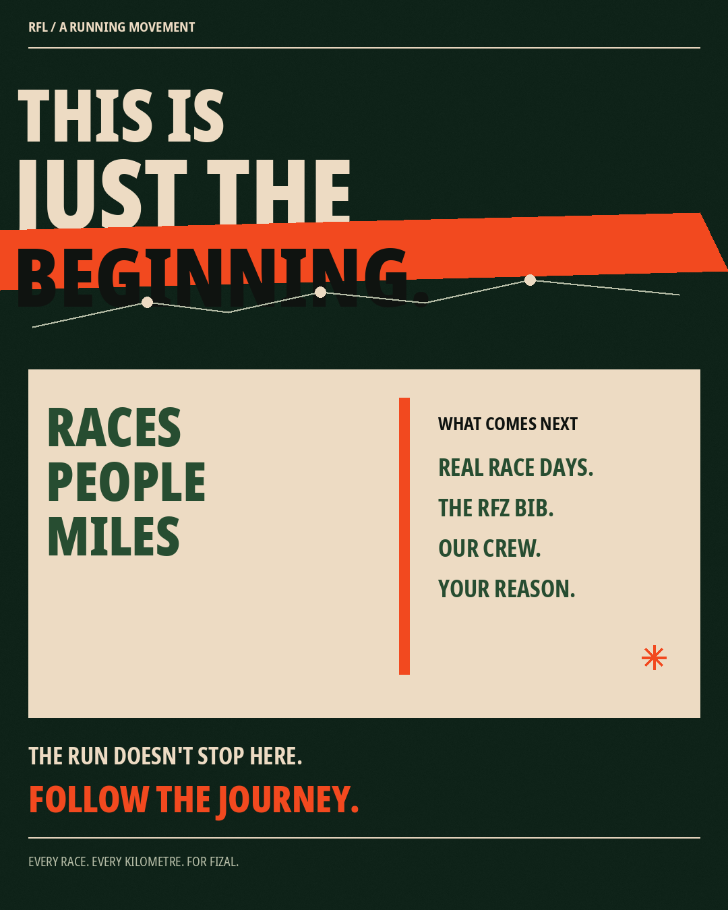
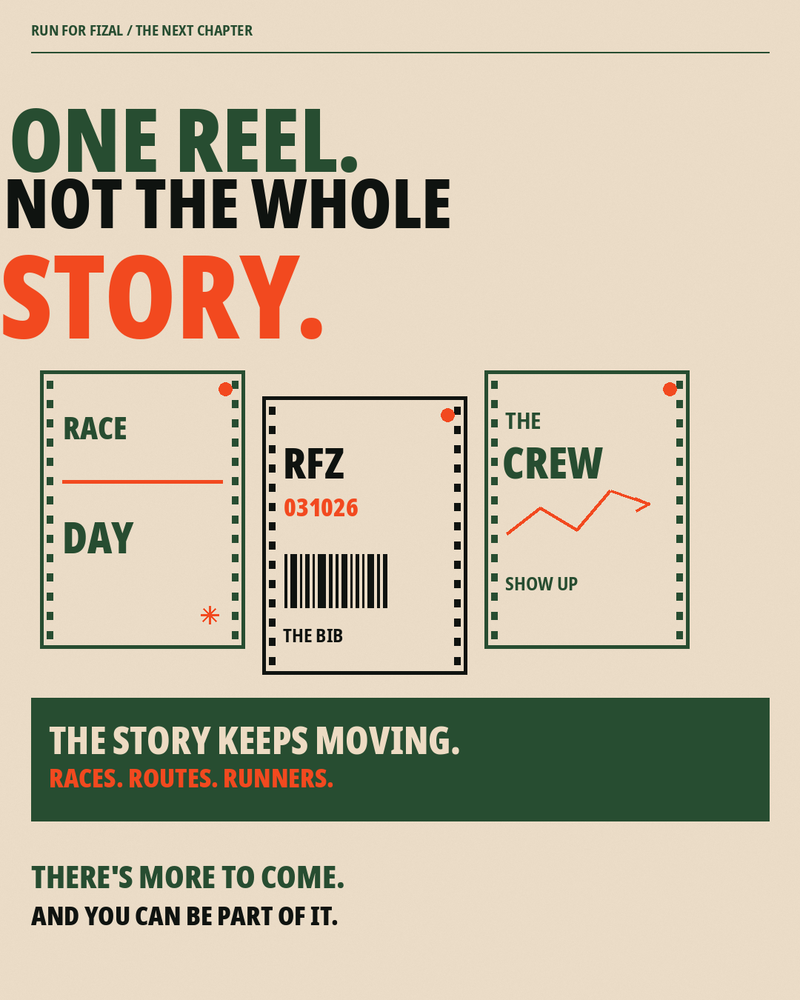
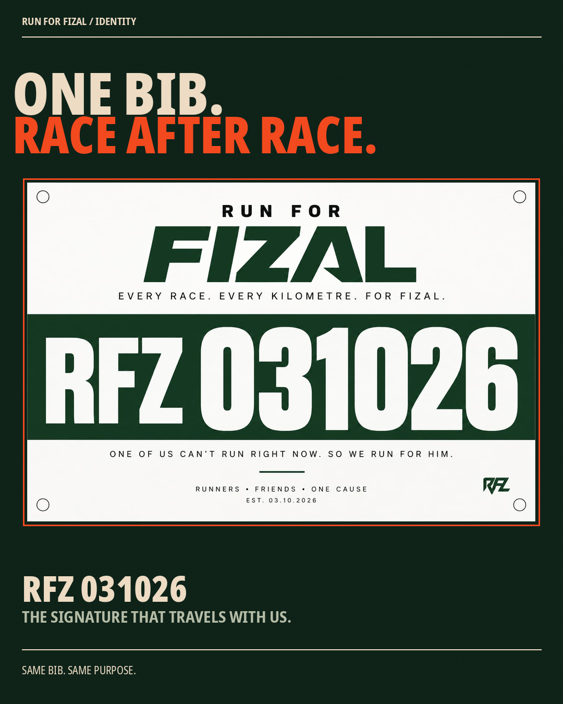
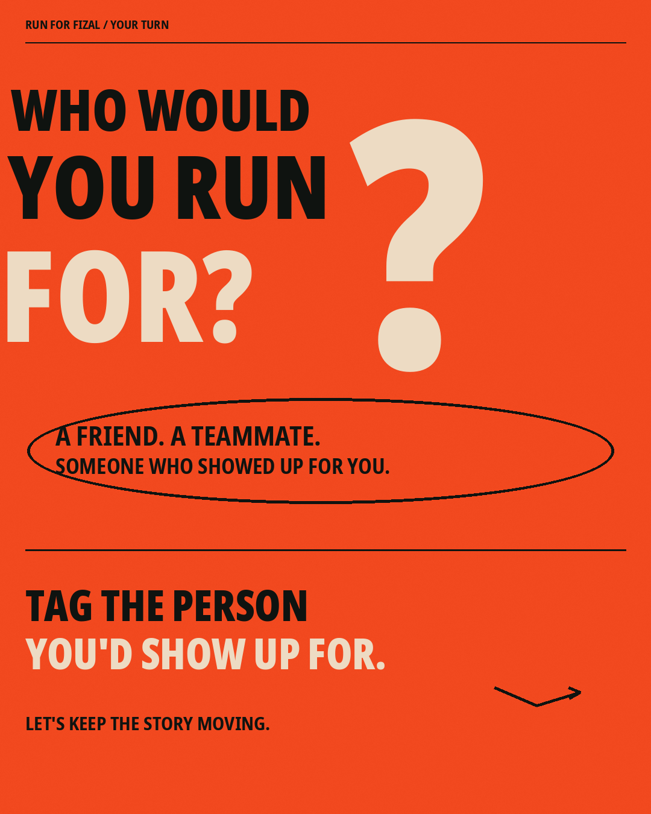

Run for Fizal
A community running movement.
How an everyday runner's sudden knee injury sparked a grassroots social media campaign built around friendship, accountability, and the custom RFZ 031026 race bib.
All visuals, race photographs, medical diagnosis records, and video cuts in this case study represent authentic material from the Run for Fizal initiative. No medical treatments, commercial sponsorships, or fabricated fundraising totals are claimed.
Verified Campaign Narrative: All 8 Original Supplied Slides
Below are the eight individual original creative files from the supplied Run_For_Fizal_ReferenceStyle_RealPhotos_V14_PNGs directory. Each slide is presented individually in its native 4:5 aspect ratio without artificial collage compression, preserving all original typography, Strava telemetry, clinical MRI scans, and photography.

Rather than relying on sterile, generic fitness slogans, the visual direction of Run for Fizal was anchored in authentic vulnerability. By integrating Fizal's real race bib (IA 417), verified Strava/GPS race pace data (10K in 53:12), and unfiltered medical documentation (actual MRI scan diagnosis), the content dismantled the polished facade typical of athletic social media and replaced it with genuine human empathy.
Everyday Relatability “Bro was just trying to run…”
Positions Fizal as an approachable, authentic runner rather than an unreachably elite athlete. Uses modern colloquial phrasing to create instant thumb-stopping engagement across Instagram feeds.
Verifiable Athletic Effort “10K in 53:12 (5:19 / km)”
Backs up the passion with measurable athletic evidence: pacing numbers that signify dedicated training, proving this is someone who genuinely loved putting in the road work.
Unfiltered Diagnostic Reality “Medial Meniscus Tear & Cyst”
Presents real MRI findings rather than vague excuses: Medial meniscus tear, large parameniscal cyst, and joint effusion. Real medical truth transforms a training break into an undeniable, high-stakes recovery battle.
The Physical Artifact “RFZ 031026 Race Bib”
Creates an iconic, tangible badge of solidarity: an official custom running bib carrying his name that teammates physically pin to their chest during competitive races while he undergoes rehabilitation.
In modern social media strategy, the three pinned posts at the top of an Instagram grid establish the permanent foundation for all incoming profile traffic. While Pin 1 introduces "Who is Fizal" and Pin 2 delivers the viral 26-second video reel, Pin 3 was designed as a graphic-led, 8-slide manifesto. Its deliberate purpose is to answer: “What comes next, and how can the broader running community take part?”




Authenticity is the foundation of the Run for Fizal campaign. These verified photographs—captured during actual race mornings and pre-dawn training sessions—were preserved and integrated into the design system without decorative filters or artificial staging.
Crafting Rhythm Between Solitude & Team Momentum
Short-form video demands immediate narrative traction. For the Run for Fizal reel, the editing strategy combined sensory audio pacing with rapid documentary jump cuts to guide viewers through an emotional transformation in under 30 seconds.
To ensure strict portfolio integrity, here is the transparent distinction between my creative execution responsibilities and collaborative community participation:
Campaign Narrative Architecture
Formulated the core storytelling angle: transforming an athlete's physical injury from an isolating setback into an inspiring team rally. Authored the copy beats across both carousel sets.
Multi-Slide Carousel Art Direction
Designed and produced all 16 carousel slides across the Reference Style (V14) and Pin 3 Graphic-Led sets at 1080×1350 resolution, enforcing visual consistency, typography balance, and legible mobile scaling.
Short-Form Video Reel Editing
Edited and exported the final 26-second vertical reel (`rfl_FINAL.mp4`), assembling footage, timing cuts, integrating typography overlays, and executing sound design from ambient heartbeat to energetic race audio.
Profile Grid Architecture & Curation
Structured the Instagram pinned-post hierarchy (Pin 1: Who is Fizal, Pin 2: Video Reel, Pin 3: Graphic Manifesto) to ensure seamless onboarding for incoming running club followers.
Campaign Philosophy & Retrospective Takeaways
A transparent overview of the campaign's intended objectives, execution realities, and the strategic takeaways learned from organizing a community initiative.
| Strategic Pillar | Intended Objective | Execution Reality | Key Takeaway |
|---|---|---|---|
| Authenticity over Polished Perfection | Counter superficial social media fitness posturing. | Presented unfiltered MRI findings and actual medical diagnosis. | Real vulnerability creates deeper community empathy than curated highlight reels. |
| Multi-Format Content Ecosystem | Provide immediate discovery while maintaining long-term retention. | Combined 9:16 fast-paced video for viral reach with 4:5 carousels for deep storytelling. | Reels drive initial profile discovery; carousels establish emotional investment. |
| Physical Artifact Symbolism | Give the community a tangible symbol to unite around. | Designed the dedicated RFZ 031026 race bib worn during actual marathons. | A physical artifact transforms abstract social support into an unmistakable on-course presence. |
| Measurable Reporting Ethics | Refuse simulated analytics or inflated follower totals. | Reported strictly verified deliverables (16 slides, 1 video edit, authentic race photography). | Authentic deliverable proof consistently builds higher credibility than unverified engagement vanity. |